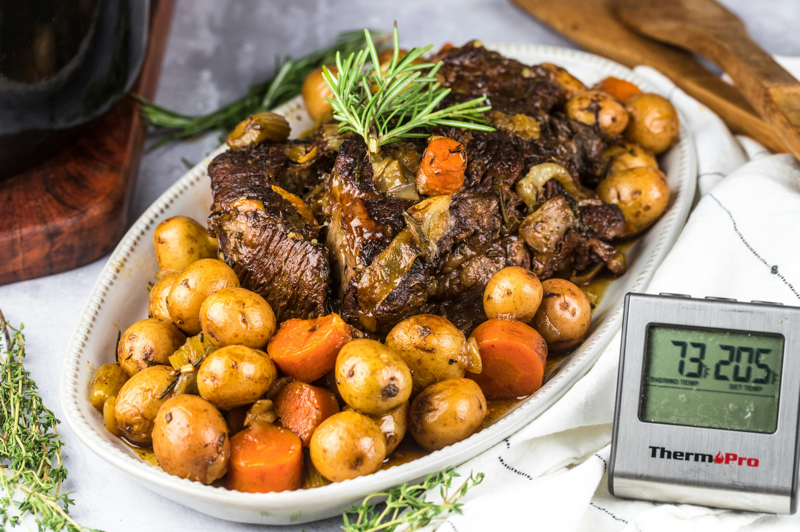

Southern Pot Roast Recipe

The most delicous Southern Style Pot Roast to feed a large group of people for any occassion.
As someone who finds joy in crafting comforting meals, there's nothing quite like the aroma of a
slow-cooked pot roast filling the kitchen on a lazy Sunday afternoon. With its tender meat, savory
gravy, and melt-in-your-mouth vegetables, this dish has been a staple on family dinner tables for
generations. From my kitchen to yours, I'm thrilled to share my own twist on this beloved classic,
infused with love and seasoned with warmth.
Now, imagine this: a perfectly seasoned chuck roast nestled in a bed of onions,
carrots, and potatoes, all bathed in a rich broth infused with aromatic herbs and spices.
The slow cooker does all the heavy lifting, tenderizing the meat until it practically falls
apart, while the flavors meld together into a symphony of comfort. So grab your apron and
let's dive into the heart and soul of home cooking with this timeless pot roast recipe.
Ingredients:
- 3-4 lbs chuck roast
- 2 tbsp olive oil
- 1 onion, diced
- 3 carrots, peeled and chopped into chunks
- 3 potatoes, peeled and cut into chunks
- 4 cloves garlic, minced
- 2 cups beef broth
- 1/2 cup red wine (optional)
- 2 tbsp tomato paste
- 1 tbsp Worcestershire sauce
- 1 tsp dried thyme
- 1 tsp dried rosemary
- Salt and pepper to taste
- 2 bay leaves
Steps:
- Heat olive oil in a large skillet over medium-high heat. Season
the chuck roast generously with salt and pepper, then sear it on all
sides until browned. Transfer the roast to the slow cooker.
- In the same skillet, add the diced onion, carrots, and potatoes. Cook
for 5 minutes until slightly softened. Add minced garlic and cook for
an additional minute.
- Transfer the vegetables to the slow cooker, arranging them around the roast.
- In a mixing bowl, whisk together beef broth, red wine (if using), tomato paste,
Worcestershire sauce, dried thyme, and dried rosemary. Pour this mixture over
the roast and vegetables in the slow cooker. Add bay leaves for extra flavor.
- Cover and cook on low for 8 hours or on high for 4-5 hours, until the roast is tender
and falls apart easily with a fork.
- Once cooked, remove the roast and vegetables from the slow cooker. Discard bay leaves.
If desired, thicken the gravy by mixing 2 tablespoons of cornstarch with 2 tablespoons of cold water, then stirring it into the hot liquid in the slow cooker. Cook on high for an additional 15 minutes until thickened.
- Slice the roast against the grain and serve with the vegetables and gravy. Enjoy your
delicious and comforting pot roast!